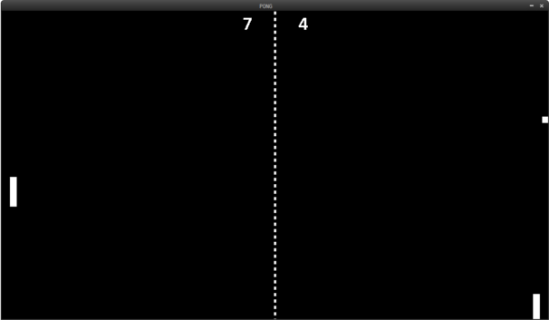
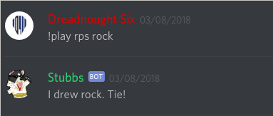

Projects List
Paint-like program (Course project)
In my Software Design (CSC207) course, we designed and created a paint-like program. We created the canvas, created application utilities like shape creation, colour changing, and brushes.
prong
This was an inefficent but working Java clone of PONG for my Grade 12 final project. It played with two players, having each player control a paddle. Player 1 would play with W and S, while Player 2 would play with the Up and Down arrow keys. Whoever plays and receives 7 points first wins the game.
Stubbs Bot
Using nodeJS, I use the discord and discord-commando libraries to create a chatbot for my Discord server. Currently a work in progress, the chatbot imitates and acts like a corgi dog. You can pet it, feed it, and play games with it. More features to come in later iterations.
Currently a private repository, please request a copy.